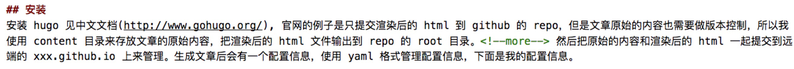

hugo 使用
Contents
安装
安装 hugo 见中文文档(http://www.gohugo.org/), 官网的例子是只提交渲染后的 html 到 github 的 repo，但是文章原始的内容也需要做版本控制，所以我使用 content 目录来存放文章的原始内容，把渲染后的 html 文件输出到 repo 的 root 目录。
然后把原始的内容和渲染后的 html 一起提交到远端的 xxx.github.io 上来管理。生成文章后会有一个配置信息，使用 yaml 格式管理配置信息，下面是我的配置信息。
|
|
写博客
在博客的头部添加文章的 metadata 信息或者使用 hugo new tips/tips.md，然后内容使用 markdown 格式写就完事了。
|
|
另外 hugo 默认会自动截取文章前面的一段内容作为摘要信息，可以使用 <!--more--> 手动指定摘要的内容

发布
写完了之后需要把写完的 blog 渲染成 html 文件，执行 hugo -d .， -d 选择输出目录的位置，把它输出到当前 repo 的 root 的目录，然后 push
到 github repo 即可。
1
|
hugo -d . |
本地预览执行命令
1
|
hugo server |
Author zhengjiajin
LastMod 2019-01-17